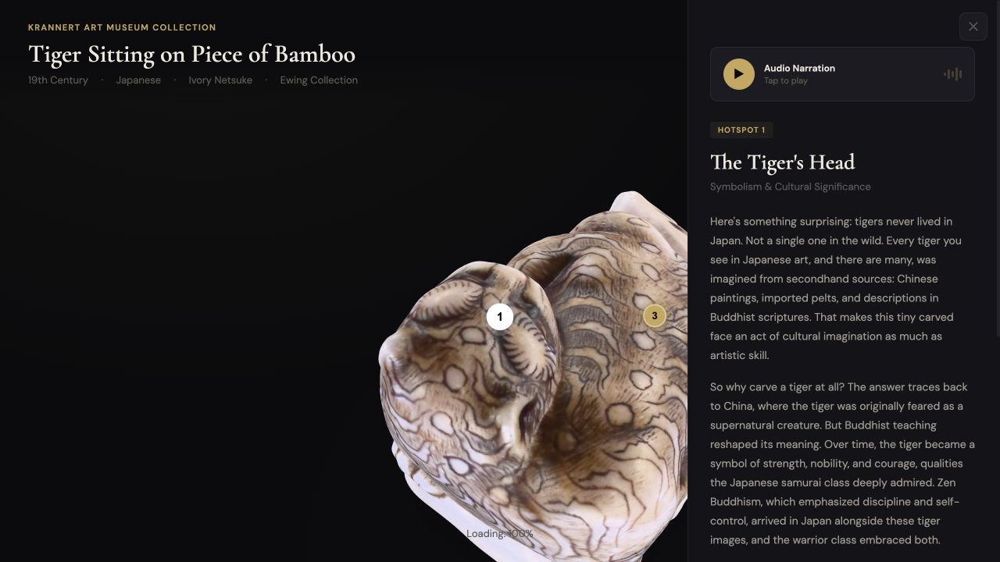
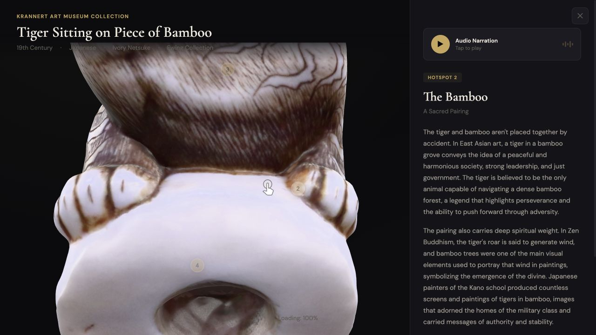

02 · DIGITAL HERITAGE
Netsuke Tiger Viewer
Connecting the details of a museum object to the stories behind them through 3D exploration, interactive hotspots, and audio narration.
- Role
- UX Designer & Developer
- Timeline
- Spring 2026
- Focus
- Interaction design · Digital heritage
Explore the live viewer ↗ (opens in a new tab)

A museum object, explored through its details
Netsuke Tiger Viewer is an interactive digital experience built around a 19th-century Japanese netsuke from the Krannert Art Museum. Visitors can rotate and zoom the object, select points of interest, and read or listen to interpretation associated with its features.
My work connected artifact research, content organization, interaction design, and front-end development. The challenge was to make the digital model a way into the object’s history and cultural meaning, with the interface supporting both close inspection and learning.
Bring the explanation closer to the object
When an artifact image and its description sit apart, the visitor has to make the connection between a visual detail and the text that explains it. A long description can provide context while still leaving someone unsure where to look.
This project explored a different structure: attach interpretation to specific points on the object, so that curiosity about a detail becomes the starting point for learning about it.
How can an interactive viewer help visitors explore a museum artifact while understanding the meaning of what they are seeing?
Turn research into points of discovery
Research focused on the historical role of netsuke, the artifact’s cultural context, tiger symbolism, and the meaning of its visual details. I also considered how digital museum interfaces present historical information.
I organized that material into smaller sections connected to parts of the model. The tiger’s head becomes an entry point into symbolism and cultural significance; the bamboo opens a related explanation of the pairing. This gives each hotspot a purpose beyond identifying a location.
The resulting structure lets visitors choose what interests them and reveal more context as they explore, without presenting every explanation at once.
One continuous loop of looking and learning
- Explore the artifactRotate and zoom to inspect its shape, surface, and details.
- Select a point of interestChoose a numbered hotspot attached to a feature of the object.
- Read or listenOpen the associated interpretation, with optional audio narration.
- Return to explorationClose the panel and continue inspecting the object or choose another detail.
Keep the artifact in view
The model anchors the interface. Selecting a hotspot opens a side panel, keeping the object visible alongside its explanation. This supports moving between the physical detail and the information associated with it.

Give each explanation a clear hierarchy
The panel separates the hotspot label, title, subtitle, and explanatory text. Narration provides another way to follow the interpretation. Visitors can choose how much context to engage with before returning to the model.

Refine the transitions, not just the screens
Usability walkthroughs surfaced friction around discovering controls, understanding interaction states, and staying oriented while navigating the model. These findings guided four areas of refinement:
- Hotspot discoverability. Some users did not immediately recognize the markers as interactive. Their presentation and behavior were refined to make points of interest easier to identify.
- Navigation states. The distinction between navigating the model and interacting with its content needed clearer behavior and communication.
- Camera behavior. Viewing positions and navigation actions were adjusted to address disorientation during exploration.
- Information hierarchy. Typography, spacing, and content hierarchy in the side panel were refined to make interpretation easier to scan.
These walkthroughs identified design issues and informed revisions. They do not establish a measured improvement in learning or usability; that would require a follow-up evaluation.
From interaction concept to a live viewer
I built the experience with HTML, CSS, and JavaScript, using Google’s <model-viewer> for the 3D object and deploying the site on Vercel. Development brought the content, hotspot selection, information panels, and camera behavior together in a working browser experience.
The screenshots here capture the overview and contextual reading states. The live viewer lets visitors try the movement and transitions themselves.
Exploration needs enough guidance to begin
The central design tension was between freedom to inspect the object and enough guidance to understand it. Hotspots connect those activities, but they only help if visitors recognize them and understand what will happen when they select one.
This project brought information architecture into a spatial interface: deciding where an explanation belongs mattered as much as deciding how to write it. Camera movement, panel hierarchy, and navigation states all shaped that relationship.
A next evaluation would focus on whether first-time visitors discover the hotspots without prompting, return comfortably to exploration, and connect the interpretation to the feature they are viewing. I would also check the experience across touch, keyboard, and slower-loading devices.
Artifact context
The viewer presents Tiger Sitting on Piece of Bamboo, a 19th-century Japanese ivory netsuke identified in the experience as part of the Krannert Art Museum’s Ewing Collection. This case study describes my interface design and development work.